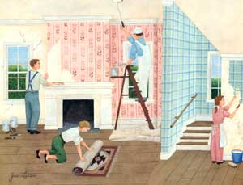
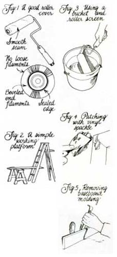
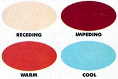
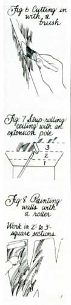
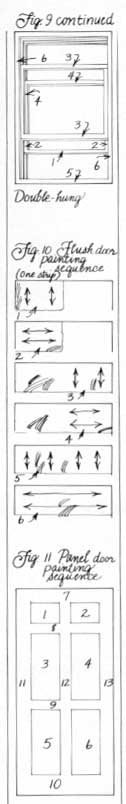

A homeowner's guide to working step by step through an inside job.
Your house needs painting, and a question comes to mind: What's the difference between the inside surfaces and the outside? A comic might say six inches, but the joke is all too often on the do-it-yourself painter. There are important distinctions between interior and exterior painting, and Part I of this handbook, which ran in our March/April issue, starts with the rough work. It covers the basics of exterior painting-recognizing paint failure, handling the all-important preparation work, choosing the right tools and paints and using those materials correctly.
What if you intend to paint just an inside room or two? It still wouldn't hurt to brush up on the finer points of outside painting, because both techniques share similarities. Moreover, the second half of the article, which follows, will be easier to understand, since it's been organized to parallel the first.
Choice or Challenge?
Unlike the paint on the outside of your house, that on the inside won't always show signs of wear. Rather, the problems which do appear often result from improper ventilation, shoddy preparation, a building deficiency or simply the wrong choice of paint.
On the other hand, you may want to cover an old finish with something new just to make a change ... or to unite a variety of construction materials with a single color. If either of these is your aim, you're one step ahead but you're still not entirely in the clear.
Let's start by looking at some of the signs that indicate a condition that'll require some attention before any new paint is applied:
Crazing. Paint that's checked or crazed shows an incompatibility with the coat below it. The problem is most widespread where a semigloss latex was used over an enamel that wasn't roughened or deglossed before being painted.
Cracking. Cracks in the finish-especially long straight ones that become more obvious with time-are often caused by joint failures where two sections of wallboard meet. This may stem from a too thick application of the spackling compound used to smooth the joint, loosened wallboard tape (prompted by dry-wall shrinkage or moisture) or a structural problem such as uneven settling of the building or misaligned wall studs.
Peeling. Blistered or peeling paint may indicate a number of problems, including the use of an improper primer coat (or no primer at all), excessive humidity, an overly glossy finish beneath the primer or final coat, or a film of grease or soap on a painted-over surface.
Bleeding. Stains that show through even a newly painted surface are probably the result of smoke, water or chemical damage that was left untreated. Crayon and pencil markings may also have a tendency to taint the finish. Bleeding on painted wood, however, is usually caused by sap streaks and the resin in knots.
Mildew staining. Dark speckles or patterns in the paint indicate the presence of mildew or fungus, usually in an area out of the line of direct sunlight and with high humidity or poor ventilation.
Smudging. Dirt, grease or fingerprints can generally be washed from surfaces having a semigloss or gloss finish. Flat paints, however, cannot be cleaned as easily and tend to retain such imbedded blemishes.
In addition to these telltale signs, there are others you should be aware of before you go to the trouble of repainting. Gouges in dry wall or wood surfaces should be patched or filled prior to any redecorating. Paint-even thick paint-isn't made to fill dents and holes; it can only follow the contours of the surface it's applied to. Flat spots are dull patches especially noticeable on a light-colored satin or semigloss finish. They're caused by inconsistencies in the primer coat, and they show up as well where spot spackling repairs have been sanded smooth but painted without a primer. Surface nap -a raised, "fuzzy" texture on wallboard-can sometimes be traced to the use of an alkyd paint on new, unprimed dry wall.
If the only flaw in the surface is that it's the wrong color, your work will be simplified considerably. But you can still make it difficult by avoiding the basic steps that every painter must deal with when refurbishing existing decor. Though understanding the need for preparation is a great start, knowing how to go about it the right way-as you'll see-will assure an even better finish.
Stocking Up
Happily, most of the tools and materials used for outside painting can be used for inside work as well. There are only a couple of specialty items you might want to consider for specific jobs, and these are more for convenience than necessity.
Putty knives. With interior painting, putty knives can double as scrapers for almost any job because surfaces tend to be flat and not actually weatherbeaten. A standard 1½-inch putty knife and one with a wider blade-say four inches to six inches-will handle typical scraping and compound-smoothing chores. A 10-inch tape knife is handy if you anticipate a lot of joint work, and a hook scraper is good for flat trim.
Sandpaper, for deglossing, can be a fine or extra-fine grade, 180- or 220-grit. A slightly rougher 120-grit sanding sponge is excellent for leveling joint compound and finding the contours of beveled wood trim. Coarse steel wool is also handy when removing layers of old paint. A hand-held electric sander would be a welcome time-saver, as would a forced-air heat gun for stubborn window and trim paint. If you're partial to chemical paint strippers for woodwork, make the effort to locate a product that's flame- and explosion-proof. It'll not only be safer to use indoors but shouldn't be as harsh on the wood grain because it's less caustic.
Brushes and rollers. Brush quality is nothing to skimp on, even if you plan on doing the majority of your work with a roller. A four-inch wall brush, a one- or two-inch beveled sash brush and a small, straight trim brush should handle any inside work. Remember that good synthetic brushes-nylon and polyester-are OK for both alkyd and latex paints, but use the best natural-bristle types with alkyd or oil-based paint only.
Rollers, ideal for flat areas like walls and ceilings, are great investments if they're well made. The handle should be sturdy, with a smooth action, a comfortable grip and a threaded end-socket ringed with a metal ferrule. The best covers have a well-blended seam, beveled edges with a glue seal, consistent, tightly woven pile filament and a stiff, water-resistant core (Fig. 1). A nine-inch roller is ideal for most jobs, and a three-inch trim roller might be handy for narrow surfaces.
Like brush bristles, filament materials are specific to the type of paint used. Polyester and other synthetic covers are made for alkyd and latex paints; natural lamb's wool covers are usually recommended for use only with solvent-thinned products, though specially processed wool covers will work with both kinds of paint.
Unless you're coating some type of rough-textured surface such as stucco, brick or porous masonry, you won't need a long-nap cover. Fine (3/16-inch) nap works best for smooth wood surfaces, a short (¼-inch to 3/8-inch) nap will do for dry wall, and a medium (½-inch to ¾-inch) nap suits sand textures, rough wood and concrete. If you plan to paint ceilings, you'll need an extension pole long enough to reach overhead from any position on the floor.
Finally, you may find that a foam pad applicator does well for the close work around baseboards and moldings; most have trim guides to protect the woodwork when edge painting. Foam brushes and rollers are also available, and work surprisingly well for their low cost. Thinking about a power paint roller? If you've got the time for maintenance and cleanup, have large surfaces to cover and will be limiting yourself to a couple of colors, they're worth looking into.
Ladders and platforms. Even if you're on an austerity budget, a sturdy six-foot stepladder is a necessity for "cutting in" around door trim and ceilings. Naturally, ceilings higher than eight feet require a taller ladder so you can work safely. If you have a second stepladder or even a solid sawhorse, you can make a fine working platform by laying a 10- or 12-foot 2 X 8 plank across two level steps, taking care that the board extends beyond its support at each end (Fig. 2).
Paint pots. Professionals hardly ever do brush work straight out of the paint can, because dried overflow makes the canister difficult to seal. Instead, they use paint pots-small containers that can be replenished with a quart or so at a time. Roller pans are likewise avoided; for nonstop painting it's far easier to use a scalable plastic bucket and a roller screen, which squeezes excess paint off the cover in one pass (Fig. 3).
Odds and ends. Your need for additional materials will vary with each job, but you can count on collecting some of the following: both plastic and fabric drop cloths; safety glasses, old clothing, a disposable hat and dust masks; a hammer, a nail set, a plaster-cutting tool and a small, flat pry bar; tack rags, sponges, a sanding block, masking tape and a metal paint shield; joint compound or a good vinyl or lightweight spackle, paintable acrylic latex caulk and, for deep cracks, a chemical-set patching plaster.
Wash and Where
Chances are that even a recently-painted surface isn't clean enough to hold a fresh coat of paint. Even if it were, there are probably nailheads, cracks and dimples present that need to be patched before you can consider a finish coat.
To do the job right, you'll have to be critical. Examine every surface in the room: floor, baseboards, walls, window and door trim, the ceiling and any molding around it. You're out to spot flaws such as those mentioned earlier and any others that'll spoil your efforts, including tack holes, cellophane tape marks, wood splits and bubbles in wallpaper. Remove switch and outlet plates, picture hooks, conspicuous door and window hardware and smoke alarms while you're at it.
Assuming that the room is unmarred (don't count on it), the only job necessary is to remove residual dirt from painted surfaces. For flat-painted areas, this may involve nothing more than dusting with a clean dry mop or painter's tack rag. Semigloss surfaces, especially those in bathrooms, kitchens and rooms with woodstoves, are best washed with a mixture of one cup of trisodium phosphate (TSP) dissolved in four gallons of warm water, then sponge-rinsed. Though you may be tempted to use a soapy household detergent or spray cleaner for this job, be aware that some can leave a wax or kerosene residue which adversely affects the paint.
Thinking about skipping this cleaning step? Be ready to welcome a Pandora's box of woes. In bathrooms, peeling paint is usually attributed to excessive moisture, and exhaust fans are installed at some expense. But the problem is often caused by something far simpler to cure: unwashed soap residue from the shower. Likewise, fireplace smoke and kitchen grease make poor bases for even the best of paints.
THE NUTS AND BOLTS OF COLOR
Of all the ways to spend money renovating your home, painting is by far the least expensive. The effective use of color can appear to raise a ceiling, widen a hallway or brighten a dark corner... all for the cost of a few coats of spreadable pigment.
Every color reflects a specific amount of light; the lighter the color, the more light we see. Pairs of the primary colors-red, yellow and blue-join to form the secondary hues of orange, green and purple. These six can be further blended to create a half-dozen tertiaries-mixtures such as yellow-orange or blue-green that fall between the primary and secondary colors in the spectrum. Using tints (a color plus white) or shades (a color plus black or gray) of these 12 hues, a paint dealer can create dozens of values or tones to complement an existing color, highlight an area or set a specific mood.
There are several rules of thumb worth remembering when it's time to paint your home. One is that pale colors recede visually, so a light surface makes a room appear larger. This works well to boost a low ceiling or expand the close walls of a narrow passage. Overly vibrant or aggressive hues, however, draw boundaries and set visual limits. Another point is that colors determine the mood of a space. Reds and oranges can suggest anything from warmth to excitement, depending on their brightness. . . not the perfect choice for an already-hot kitchen. Blues and greens, on the other hand, are cool colors well suited to porches and dining rooms. Whites can be either cool or warm, based upon their tint. And flat finishes, regardless of color, are more soothing than the harder satins and semiglosses.
Finally, contrast-or lack of it-should be used to best advantage. Beautifully detailed woodwork will appear more prominent if painted a light color against a darker wall; wood trim with a natural finish shows up best against earth-tone hues. If a structural feature or piece of furniture is especially worth emphasizing, set it off by backing it with a complementary color. If just the opposite is true, choose a color that allows the piece to get "lost" in the wall. And don't sell paint short on its ability to unify an eclectic decor. When faced with a confusing variety of trim, finishes and building materials, a coat of a single color might be all that's needed to bring the assortment together.
Moldy and mildewed areas should be treated with a solution of one pint of chlorine bleach to one gallon of water, then rinsed with a TSP-and-water mixture and allowed to dry. Smoke and stain damage should be washed and rinsed in the same way. In circumstances like these, where stains are apt to come through the paint with time, a stain-killing sealer/primer should always be used, preferably over the entire surface. Spot-sealing is fine for woodwork, knotty paneling and patched areas.
A more realistic situation would be one in which the walls and other surfaces need minor work. If there's a ridge of built-up paint around switch plates or light fixtures, sand the spot gently, using a block to assure level pressure. A gouge or dent will require a scuff-sanding, followed by a layer or two of joint compound or vinyl spackle (Fig. 4). Depressions deeper than 1/8 inch or so might require a plaster base beforehand. Spread the spackle evenly with a wide-bladed putty knife, let it dry, then sand over and beyond the spot with 120-grit paper on a block to feather the edge. It's especially important that patch spots be primed before painting because they're smoother and more porous than the surface around them and may finish with a "flatter" sheen.
Deep cracks wider than 1/8 inch should be filled with patching plaster. Unlike spackle, plaster hardens in an hour or so and has little tendency to shrink. It doesn't sand well, though, so it's not a great surface patch. If the crack is too narrow to work with, enlarge it with a pointed can opener or a plaster-cutting tool. After removing loose debris, dampen the crack's edges, and pack the crevice, using a putty knife. Work the plaster with strokes in both directions, then make a final, leveling pass with a broad knife dipped in water. Once it's set, rough-sand it, cover the area with a thin layer of joint compound or spackle, and give it a final sanding.
Nail holes are treated the same as gouges, but popped nails in dry wall require a bit of preventive repair. First, tap the loose nail back into place, setting it slightly below the surface. Then drive a ringed dry wall nail into the wallboard a few inches above or below the loose nail. Fill the dimples with spackle, and smooth it; two or three applications may be necessary to bring the indentations level with the surface for sanding.
Loose joint tape is a common problem. Strip away any tape that's lifted or bubbled, being careful not to tear into the dry wall's gypsum core. Sand the cleared surface smooth, and brush away any loose powder. Then, with a broad blade, spread a thin layer of joint compound, as wide as the tape, over the area. Tear off a piece of new tape to length, lay it over the compound, and press it flat with the knife. Smooth a cover layer over the tape and its edges, let it dry, and give the patch a light sanding before applying a final, leveling coat of compound.
Painting over wallpaper? You may be faced with a tough decision. Ideally, it's best to get the paper off, and newer vinyl coverings are made for easy removal. Older wallpaper, however-especially that applied to unsealed wallboard-can be very stubborn and may require steaming or dampening with a solution (ask your wallpaper and paint dealer). On the other hand, it may not come off at all.
If there's only one layer of paper in place and it's firmly attached, you can leave it on. First slit out any bubbles with a razor blade, and sand the edges and seams. Then fill those areas with spackle, and sand them smooth before applying a sealer coat.
Gaps or cracks between wood moldings and walls can easily be filled with a paintable acrylic latex caulk, smoothed with a wet finger, then wiped clean with a damp rag. Gouges and holes in the wood itself can just as easily be repaired with stainable latex wood filler or vinyl spackle. If you're repainting a wood floor, secure any loose boards, and check for spots that need sanding, filling or feathering before dealing with the paint base.
Trim or molding that you're planning to replace should be carefully removed with a stiff putty knife and a flat pry bar prior to painting (Fig. 5). If the existing trim and paint are sound, sand lightly with fine paper just to dull the finish; a deglossing solvent can also be used for this if you're prepared to handle a flammable chemical.
Peeling paint on woodwork should be brought down with a hook scraper and sandpaper. It's not usually necessary to get every bit of old paint off, but a heat gun will help remove stubborn patches. If you're planning to stain a previously painted surface, however, you may have to use a chemical stripper to expose the wood, which should then be sanded-working with the grain-in order to produce a smooth finish.
This chart indicates the range of interior finishes and their applications. The listings, from left to right, show increasing levels of hardness and degrees of light reflection. In general, flat finishes are soft and forgiving of surface irregularities; the gloss enamels highlight imperfections, but resist marring fingerprint marks and wear from repeated cleaning. As a rule, the higher a paint's sheen level, the greater its durability. Though washable flat wall paints are sometimes labeled enamels, that term is best applied to paints-usually gloss or semigloss-with enough resins to handle frequent scrubbing.
The first part of this handbook discussed the difference between alkyd and latex paint and covered the importance of primers. For indoor work, sealing the surface, choosing the right gloss level (see sidebar), being aware of drying time and dealing with paint fumes are all important factors.
The working characteristics which separate alkyd or oil-based paints from water-based latex products are the same for both indoor and outdoor paint. Don't, however, assume that you'll get the best finish by using exterior paint indoors. To begin with, interior paint is less expensive because it doesn't need weatherproofing additives or ultraviolet protection. It's also made for indoor drying and contains few of the preservatives put in outdoor paints.
Primers, too, are specifically blended for interior work. A sealer adheres and seals well, sands easily but has limited hiding ability. Undercoat seals to some degree and levels the finish of old paint. Many primers are simply a combination of the two products.
Probably the best way to determine a paint's quality is to study the analysis of ingredients on the label. Paint consists of a pigment and a vehicle, both measured by percentage of weight. The pigment is made up of ingredients that dictate hiding ability, color and body. The vehicle, which "carries" the pigment, contains adhesive resins (binders), driers and a carrier (either water or solvents and oils).
Paints with a good percentage of titanium dioxide in their pigment hide best; that is, they're most opaque. Dark colors and latexes need less of this ingredient than do light hues and alkyds. Body, or thickness, is determined by fillers such as calcium carbonates and silicates, the former being a better choice. The vehicle of a gloss or trim paint should contain a high percentage of resins, sometimes specified as vinyl acetate acrylics or alkyds, because that's what makes it harden and stick. The solvents or water are there to give it spreadability; they evaporate soon after the paint is applied.
Spread Without Dread
When buying interior paint, figure that a gallon covers 400 to 500 square feet. Since room surfaces are usually rectangular, it's safe to multiply height by room perimeter for walls, and length by width for ceilings, to come up with the correct area of each. Don't subtract for windows unless they represent 25% or more of the total area. Doors and trim can be figured by the paint dealer, depending upon the product you're using.
Unless you're doing major wood floor sanding, plan to paint from the ceiling down to avoid spattering work previously done. Fabric drop cloths are the protective material of choice, though plastic sheets can be taped over furniture or woodwork if there's a cloth on the floor below. Avoid using newspaper, since the ink can and will bleed through when wet.
Proper ventilation is a must, especially when using alkyd paints. Open every door and window in the room, and force circulation with an electric fan. Remember, too, that strippers and thinners can be as dangerous as paint fumes. Dust masks are fine for filtering dust, but they're not designed to stop paint spray and vapors. An approved respirator mask is a wise investment.
Unpainted surfaces need to be sealed or primed before painting, whether they're dry wall, wood paneling, masonry or metal. Generally, latex primers are best because they work with either latex or alkyd paints and won't raise the fibers on wallboard. Tinting toward the finish color increases the overall hiding ability, especially when making a color change.
Sanding painted surfaces is a good idea when repainting but is most critical if the old finish is damaged enough to require it or if a latex paint is being applied over a gloss coat. Light sanding between fresh coats (with extra-fine paper) will eliminate tiny imperfections and will make a two-finish-coat job one to be proud of. Be sure to wipe any dust residue from the surface before painting.
When starting to paint, open all the cans containing the same color of paint, and stir them-even if they were shaken at the store-and pour all the paint into one bucket, which you can work out of with a roller and screen. For brush work, some paint can be poured into a pot and the bucket sealed.
To do a ceiling, it's probably easiest to start "cutting in" first-that is, paint the edges next to the wall, using an angled sash brush (Fig. 6). The remainder of the ceiling can then be rolled without coming too close to the wall. This approach can leave a lap mark between the brushed and rolled sections, though, so you might prefer to brush the edges after rolling by feathering the paint toward the newly rolled area.
Either way, it's best to use an extension pole on your roller handle and to paint in complete, full-length strips, starting on one side of the room and working toward the other (Fig. 7). Overlap each slightly, and don't allow the edge of one strip to dry before starting the next.
Walls can be painted in a similar fashion, and, again, it's easier to cut in around corners and trim beforehand. Plan on working in two- or three-foot squares, finishing a strip from ceiling to floor before moving to the next one. The roller pattern on these vertical surfaces can be a W, with the initial stroke being upward; level the zigzag with horizontal strokes to ensure even coverage (Fig. 8). If you're quick enough, long passes from floor to ceiling can smooth the finish, but avoid frantic rolling and spinning the roller after lifting it.
Windows should be painted in steps, from the inside parts outward. You can use masking paper, peeling compound or a paint shield to protect the glass from brush overlap, but it's not really necessary if you scrape away dried paint with a razor, using a broad putty knife as a backstop to retain the desired seam of paint on the glass.
With casement windows, paint the mullions first, then follow with the crossbars, window frame, sill and casing (Fig. 9). Use a narrow brush, starting each stroke gradually and coming out of it gently. Double-hung windows will have to be opened so the sashes "swap" positions; the normally covered meeting rail can then be painted, followed by the upper sash stiles and the lower sash rails. The sashes should then be partially closed, and the upper sash top rail and unpainted stiles done, followed by the stool and casing.
Flush doors are worked in adjacent sections, starting at the top. The first strokes are vertical, followed by horizontal brushing over the same area. The procedure is repeated on the section alongside, then the entire broad strip is brushed up and down and smoothed horizontally (Fig. 10) before moving to the area below.
Panel doors must be painted with the grain, in sequence, and finished in one session. The panels are done first, upper to lower, then the horizontal rails, followed by the vertical stiles (Fig. 11).
Wood molding and trim are usually painted with enamel and require a cross-brushing technique. First, paint is applied against the grain, then slow, leveling strokes are used to push the paint into the surface. The bristles should flex slightly but never be forced. Also, paint that has begun to set up shouldn't be painted over while wet.
Floors should be painted in square-yard sections as meticulously as possible. Concrete surfaces require a sound primer coat, and there are special masonry paints available that you might want to look into. A word of warning: Some floor finishes won't dry properly if allowed to cure in a room warmed with an unvented kerosene heater. Be sure to read the product instructions carefully if you plan to speed the drying process using this method.
Cleanup and paint storage don't need to be major chores. Brushes should be soaked (alkyd paints in solvent, latex in soap and warm water) and wrapped as described in the first part of this handbook. Rollers used in latex can be washed in detergent and water, then scraped down with a cleaning tool; if alkyd paint was used, it's simpler to throw the covers away because the cleaning solvent is probably more expensive than they are.
Store unused paint in the original cans if you haven't punched holes in the lip to allow drainage; if you have, new cans are available from the paint dealer. For long-term storage you can pour a layer of solvent on top to discourage "skinning," but remember that latex paints tend to mildew and are ruined if they're frozen.
That just about covers it, from the outside in. The next time you're faced with the challenge of the brush and roller, you'll know what to do.
|
 ILLUSTRATION BY JOAN LANDIS |
 |
 |
|
 |
 |
|